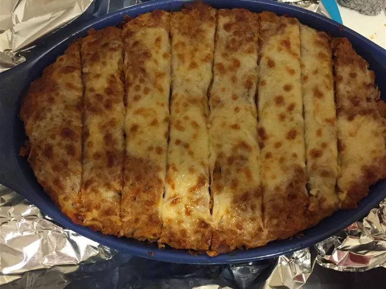

This chicken meatloaf is a nice change of pace from the usual meatloaf.
Preheat the oven to 350 degrees F (175 degrees C). Grease an 8x4-inch loaf pan.
In a large bowl, mix together ground chicken, eggs, bread crumbs, salsa, salad dressing, and taco seasoning mix. Pack into the prepared loaf pan.
Bake for 1 hour in the preheated oven. Top with cheese and serve with sour cream.